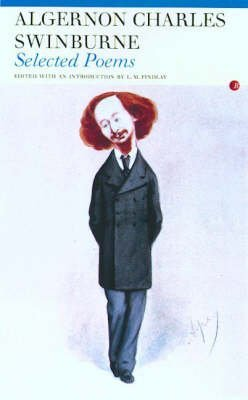
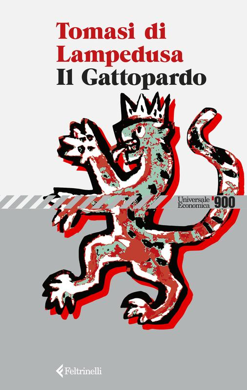
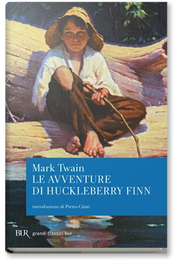

20:36 · 13 OPERE
Sul carattere religiosamente laico del moderno.
Il filo del discorso
Caldarella propone di leggere la modernità laica attraverso le forme di religiosità che, nella sua interpretazione, continuano a organizzarne simboli, promesse e divieti. Il culto dei capi, le ideologie del Novecento e il linguaggio della svolta dopo il 1989 introducono la tesi di una persistenza del sacro anche dove la religione viene respinta. La polemica passa dal messianismo politico a un capitalismo descritto come privo di alternativa, quindi al nichilismo e all’idea che l’essere umano abbia occupato il posto del divino. I richiami a Nietzsche e Kant accompagnano una riflessione sul fondamento della morale e della verità. Nella seconda parte il discorso si concentra sul linguaggio ammesso e sulla libertà di espressione, accostando i tabù religiosi ai vincoli culturali contemporanei. Il caso londinese di Hamit Coskun e il rapporto COSPE sui discorsi d’odio entrano come esempi nella sua critica; i dati giuridici e gli sviluppi successivi del processo sono precisati nella scheda. Il riferimento a Huckleberry Finn porta il tema sul terreno delle riscritture dei classici. L’appello a credere nella scienza viene poi contestato come una trasformazione della ricerca in richiesta di adesione. La conclusione collega Schmitt e Neumann al rischio di nuovi totalitarismi. È una lettura filosofica e politica del relatore: il rapporto fra laicità, religione e autoritarismo non viene assunto come una legge universale delle società.
I libri nel discorso

The Garden of Proserpine
Identificazione probabile
Copertina della raccolta Selected Poems: Carcanet / Fyfield Books · Selected Poems · a cura di L. M. Findlay
Copertina autentica della raccolta Carcanet/Fyfield Books curata da L. M. Findlay, distinta dalla poesia The Garden of Proserpine. Le ristampe del volume non sono attribuite al video; la poesia appartiene originariamente a Poems and Ballads, 1866.
Il nome Swinburne e l’epigrafe tradotta rendono probabile The Garden of Proserpine, undicesima strofa; titolo non annunciato.
Passaggio 0:08 ↗ · Fonti e libro ↗
Il Gattopardo
Identificazione probabile
Copertina: Feltrinelli · Universale Economica 900 · 2026
Immagine autentica dell’opera, controllata visivamente; l’edizione di riferimento non è attribuita al filmato.
Tomasi di Lampedusa e la frase sul cambiamento che conserva le cose rendono probabile l’allusione al Gattopardo.
Passaggio 4:11 ↗ · Fonti e libro ↗
Divina Commedia
Identificazione probabile
Copertina: Giunti Barbera · Passepartout, 2021 · edizione di riferimento
Il richiamo alla speranza abbandonata da chi entra rinvia probabilmente a Inferno III; titolo non pronunciato.
Passaggio 5:02 ↗ · Fonti e libro ↗
La gaia scienza
Identificazione probabile
Copertina: Adelphi · La gaia scienza e Idilli di Messina
Copertina autentica controllata visivamente. Edizione di riferimento, non identificata come quella usata nel video.
La morte di Dio e il suo essere stato ucciso dagli uomini suggeriscono il celebre passo della Gaia scienza, senza titolo annunciato.
Passaggio 6:23 ↗ · Fonti e libro ↗
Fondazione della metafisica dei costumi
Identificazione probabile
Copertina: Laterza · Economica Laterza 122 · Filippo Gonnelli, edizione 1997 e ristampe
Immagine autentica dell’opera, controllata visivamente; l’edizione di riferimento non è attribuita al filmato.
Kant, 1785 e imperativo categorico rendono probabile la Fondazione; il titolo non viene pronunciato.
Passaggio 8:13 ↗ · Fonti e libro ↗
Su verità e menzogna in senso extramorale
Identificazione probabile
Copertina: Adelphi · Biblioteca minima 66, 2015 · traduzione di Giorgio Colli
Immagine autentica dell’opera, controllata visivamente; l’edizione di riferimento non è attribuita al filmato.
La verità come metafore mobili, attribuita a Nietzsche, suggerisce il saggio; titolo non pronunciato.
Passaggio 8:34 ↗ · Fonti e libro ↗
1984
Identificazione probabile
Copertina: Newton Compton · edizione illustrativa
Il Ministero della Verità è richiamato con il nome di Orwell; allusione al romanzo probabile.
Passaggio 9:23 ↗ · Fonti e libro ↗
Bibbia
Copertina: San Paolo, 2014 · Nuova Versione dai Testi Antichi · edizione di riferimento
La frase latina del serpente e il libro della Genesi sono richiamati esplicitamente.
Passaggio 10:21 ↗ · Fonti e libro ↗
Areopagitica. Discorso per la libertà di stampa
Copertina della raccolta Areopagitica and Other Prose Works: Dover Thrift Editions · Areopagitica and Other Prose Works, 2016
Immagine ufficiale della raccolta Dover 2016: contiene il discorso Areopagitica insieme ad altri scritti di Milton. Non è attribuita al video una traduzione o un’edizione determinata.
Milton e Areopagitica sono nominati come riferimento sulla libertà di stampa.
Passaggio 11:29 ↗ · Fonti e libro ↗L’odio non è un’opinione. Ricerca su hate speech, giornalismo e migrazioni
Prima pagina del rapporto COSPE: COSPE · progetto BRICKS, 2016 · prima pagina del rapporto
Prima pagina autentica del PDF della ricerca COSPE 2016, non copertina di un libro commerciale. Immagine renderizzata con pdftoppm dalla pagina 1; PDF originale conservato privatamente con SHA-256 24abd90e5a221742e980c99a01cad2881b23382070dc1a32f16d01c81da9e9cc.
Titolo L’odio non è un’opinione, COSPE e anno 2016 sono espliciti.
Passaggio 12:51 ↗ · Fonti e libro ↗
Le avventure di Huckleberry Finn
Copertina: BUR · 1999 · traduzione di Gabriele Musumarra, introduzione di Pietro Citati
Immagine autentica dell’opera, controllata visivamente; l’edizione di riferimento non è attribuita al filmato.
Huckleberry Finn e Mark Twain sono nominati nel passaggio sulle modifiche editoriali.
Passaggio 16:51 ↗ · Fonti e libro ↗
Teologia politica. Quattro capitoli sulla dottrina della sovranità
Copertina: University of Chicago Press · traduzione inglese, brossura 2006
Immagine autentica dell’opera, controllata visivamente; l’edizione di riferimento non è attribuita al filmato.
Schmitt e Teologia politica sono nominati a proposito dell’eccezione e del miracolo.
Passaggio 19:45 ↗ · Fonti e libro ↗
Behemoth. The Structure and Practice of National Socialism
Copertina: Europäische Verlagsanstalt · edizione tedesca 1933–1944 · cura Söllner e Wildt
Immagine autentica dell’opera, controllata visivamente; l’edizione di riferimento non è attribuita al filmato.
Franz Neumann, Behemoth e anno 1942 sono espliciti.
Passaggio 20:03 ↗ · Fonti e libro ↗Minutaggi ricavati da testi automatici, da riascoltare. Le identificazioni probabili sono segnalate accanto ai libri.